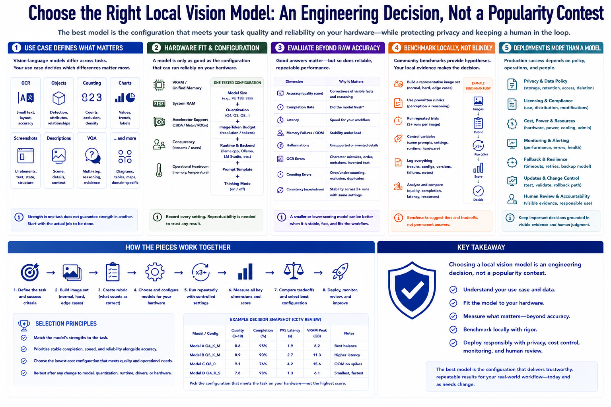

Course Summary and Key Takeaways
Connecting to LMS... Progress: in progress

Narration
Choosing a local vision model is an engineering decision, not a popularity contest. Vision-language models differ across OCR, objects, counting, charts, screenshots, descriptions, and visual question answering. The use case defines which differences matter.
Hardware fit includes VRAM or unified memory, system RAM, accelerator support, concurrency, and operational headroom. Model size, quantization, image-token budget, runtime, prompt template, and thinking mode form one tested configuration.
Accuracy must be considered with completion, latency, memory failures, hallucinations, OCR and counting errors, and consistency across repeated runs. A smaller or lower-scoring model can be better when it is stable and fast enough for the workflow.
Benchmark locally using representative images, prewritten rubrics, repeated runs, controlled settings, and a durable evaluation log. Community benchmarks provide hypotheses and hardware tiers, not permanent answers.
Deployment adds privacy, licensing, retention, cost, power, monitoring, fallback, updates, and human review. Keep important decisions grounded in visible evidence. The best model is the configuration that meets task quality and reliability on available hardware while preserving privacy and accountable human judgment.